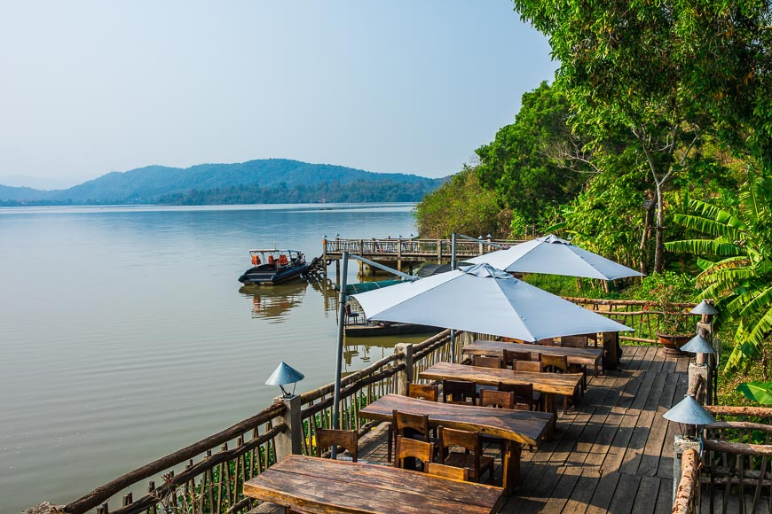
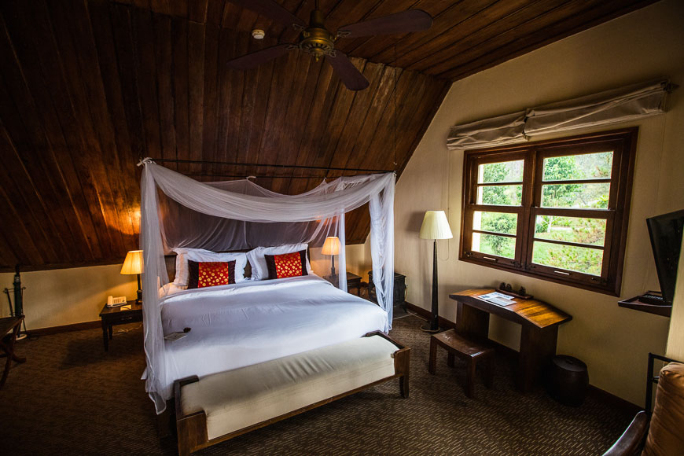

NHỮNG NƠI NGHĨ DƯỠNG TUYỆT VỜI NHẤT DÀNH CHO CÁC CẶP ĐÔI
Không cần chờ đến ngày kỷ niệm hay dịp đặc biệt, bạn và người thương vẫn có thể lên đường khám phá. Việt Nam mình có quá nhiều điều để yêu: văn hóa đậm đà bản sắc, ẩm thực phong phú, và những khung cảnh thiên nhiên trải dài từ núi rừng đến biển đảo. Dù là chuyến nghỉ dưỡng thư giãn, hành trình kỷ niệm tình yêu hay chuyến đi ngẫu hứng, chắc chắn hai bạn sẽ mang về những kỷ niệm ngọt ngào và khó quên.
Lãng mạn thuần khiết: Du ngoạn vịnh Bắc Bộ
Những vịnh Hạ Long, Bái Tử Long, và Lan Hạ ở miền Bắc chưa bao giờ khiến du khách thôi say mê. Bến tàu chỉ cách sân bay Hà Nội khoảng hai giờ lái xe. Hãy đưa người thương lên du thuyền sang trọng, cùng ngắm núi đá vôi trôi qua, chèo kayak giữa làng chài nổi và thưởng ngoạn cảnh đẹp từ boong tàu.
Gợi ý lưu trú: Emperor Cruises với hải trình qua những vùng ít khách, lý tưởng cho cặp đôi muốn riêng tư.
Cho người yêu thiên nhiên: Glamping bên hồ ở Đắk Lắk

Tỉnh Đắk Lắk yên bình với thác nước hùng vĩ, đồi cà phê, và làng dân tộc thiểu số. Hồ Lắk rộng lớn lý tưởng để chèo kayak hay đi thuyền. Tại Vườn quốc gia Yok Đôn, bạn có thể tham gia tour voi đạo đức đầu tiên của Việt Nam, xem chim, và trekking trong rừng.
Gợi ý lưu trú: Lak Tented Camp – lều sang trọng với hiên gỗ đón gió hồ, bữa sáng bên mặt nước, và xe đạp khám phá làng bản.
Digital detox: Nghỉ dưỡng đảo Côn Đảo

Chỉ mất một chuyến bay ngắn từ TP.HCM, Côn Đảo mang đến bãi biển hoang sơ và nhịp sống chậm rãi. Bạn có thể lặn ngắm san hô, đạp xe quanh thị trấn rợp bóng cây, hoặc đơn giản nằm dài trên bãi cát.
Gợi ý lưu trú: Six Senses Côn Đảo – khu nghỉ dưỡng 5 sao với bungalow gỗ ven biển và villa spa hướng biển yên tĩnh.
Đậm chất văn hóa: Ở homestay miền Tây
Miền Tây gây ấn tượng với chợ nổi nhộn nhịp, kênh rạch xanh mát, ruộng lúa vàng ươm và những ngôi chùa cổ kính. Hãy dậy sớm, đi thuyền ra chợ nổi thưởng thức tô hủ tiếu nóng hổi.
Gợi ý lưu trú: Mekong Rustic ở Cái Bè và Cần Thơ – bungalow gỗ giữa vườn hoa, trải nghiệm tour cộng đồng, thưởng trà và trái cây cùng chủ nhà.
Thư giãn tối đa: Nghỉ biển Cam Ranh
Cam Ranh yên tĩnh với bãi biển dài, thuyền đánh cá và hàng dừa rợp bóng. Các resort 5 sao mới mở mang đến kỳ nghỉ lãng mạn, villa riêng có hồ bơi, hải sản tươi ngon và nắng ấm miền Trung.
Gợi ý lưu trú: The Anam – khu nghỉ dưỡng sang trọng với vườn tuyệt đẹp, hồ bơi xinh xắn và villa hướng biển.
Cho tín đồ mạo hiểm: Khám phá hang động Phong Nha
Phong Nha mang đến trải nghiệm cắm trại bên sông, leo trèo qua đường hầm, bơi trong hồ đá và chiêm ngưỡng hang động khổng lồ.
Gợi ý lưu trú: Oxalis – tour chuyên nghiệp như hành trình 4 ngày khám phá hang Tú Làn.
Dành cho tín đồ ẩm thực: Cuối tuần ở TP.HCM
Thưởng thức cơm tấm, theo dấu Anthony Bourdain thưởng bún tại quán Lunch Lady, hoặc trải nghiệm sáng tạo tại Anan Saigon với bánh xèo taco và rượu ngải cứu.
Gợi ý lưu trú: Hotel des Arts – khách sạn sang trọng với view ngọn cây quận 3 và rooftop bar sành điệu.
Thời tiết se lạnh: Nghỉ dưỡng trên đồi Đà Lạt

Đà Lạt nổi tiếng với không khí mát lành, rừng thông, biệt thự Pháp và cánh đồng hoa. Hãy cùng nhau dạo hồ Xuân Hương, uống trà ngắm cảnh và thưởng thức nông sản cao nguyên.
Gợi ý lưu trú: Ana Mandara Dalat – biệt thự Pháp cổ trên đồi thông, bể bơi ngoài trời có sưởi và phòng với giường có màn, bồn tắm chân sư tử, lò sưởi.